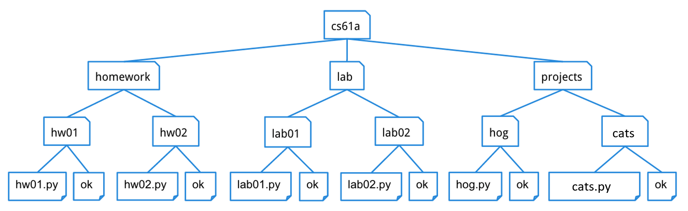
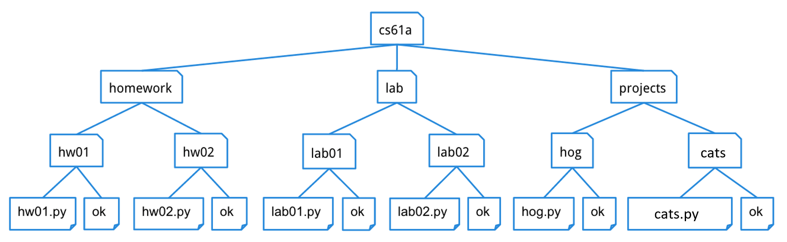

Lab 05
Trees, Data Abstraction, Python Lists
Logistics üè°
- Lab 05 due Wed 09/28
- CATS üêà
- Try out the game here: cats.cs61a.org
- Checkpoint 1 due tomorrow Tue 09/27
- The whole project due Fri 09/30
- Submit everything by Thu 09/29 for one extra credit
- NO homework due this week - homework 04 due next Thu 10/06
Highlight from last time üëÄ

Data Abstraction üëæ
Data Abstraction - Intro
- Data abstraction allows us to treat code as "objects", so that we don't have to worry about the actual implementation (e.g., how information is stored and calculated) - we just need to know what it does.
- The nature of abstraction allows whoever uses them to assume that the functions have been written correctly and work as described.
- A data abstraction consists of two types of functions:
- Constructors: functions that build and return the abstract data type
- Selectors: functions that retrieve information from the data type.
Rational Numbers Revisit
- Constructor:
rational(n, d)returns a rational number $x = \frac{n}{d}$ using some underlying representation, which we, as users, do not need to know anything of - Selectors:
-
numer(x)returns the numerator of $x$ -
denom(x)returns the denominator of $x$
-
- Arithmetic Operations:
def mul_rational (x, y): return rational(numer(x) * numer(y), \ denom(x) * denom(y))- Note how we can manipulate rational numbers using their constructor/selectors without knowing their implementation
- Side note: the
\is used to indicate that the expression continues on the next line
Rational Numbers Revisit
There are many ways to implement the rational number data abstraction. Below are two examples:
def rational (n, d):
return [n, d]
def numer (x):
return x[0]
def denom (x):
return x[1]
def rational (n, d):
return {'n': n, 'd': d}
def numer (x):
return x['n']
def denom (x):
return x['d']
No matter which one we use, the rational number data abstraction has the same, correct behavior from the users' end.
In other words, as programmers, we can design the underlying implementation for the data abstraction however we want as long as it behaves correctly according to its documentation.
Don't break the abstraction barrier!

Don't break the abstraction barrier!
- Why?
- Breaking the abstraction barrier is essentially repeating some function's job
- Once the underlying implementation changes, the code may not work anymore
- Examples of violating the abstraction barriers:
mul_rational([1, 2], [3, 4])- should bemul_rational(rational(1, 2), rational(1, 2))-
def divide_rational (x, y): return [ x[0] * y[1], x[1] * y[0] ] # should be: def divide_rational (x, y): return rational(denom(x) * numer(y), \ numer(x) * denom(y))
- Takeaway: do not repeat any work that an existing function could do!
Trees üéÑ
Trees - Intro
- A tree is a data structure that represents a hierarchy of information.
-
For example, a file system:

As you can see, unlike trees in nature, the tree abstract data type is drawn with the root at the top and the leaves at the bottom.
-
For example, a file system:

Trees - Terminology
- node: any location within the tree (e.g., root node, leaf nodes, etc.)
- root: the node at the top of the tree
- label: the value in a node
- branches: a list of trees directly under the tree's root
- leaf: a tree with zero branches
Trees - Data Abstraction
- Constructor:
-
tree(label, branches=[]): creates and returns a tree object with the givenlabelvalue at its root node and list ofbranches. Notice that the second argument to this constructor,branches, is optional - if you want to make a tree with no branches, leave this argument empty
-
- Selector:
-
label(tree): returns the value in the root node oftree. -
branches(tree): returns the list of branches oftree.
-
- Convenience function:
-
is_leaf(tree): returnsTrueiftree's list of branches is empty, andFalseotherwise.
-
Trees - Examples
sample_tree = tree(1, [tree(2), \
tree(3, [tree(4), tree(5)]), \
tree(6, [tree(7), tree(8)])])
Bonus: on code.cs61a.org, call
draw(tree) on a tree to visualize it!
- To extract the number
5from this tree, which is the label of the root of its second branch's second branch, we would do this:label(branches(branches(sample_tree)[1])[1]) - The
print_treefunction prints out a tree in a human-readable form, where the root is unindented, and each of its branches is indented one level further.- Don't worry too much about its implementation - just make sure that you are able to interpret the structure of the tree from the output
Attendance! ü§†
go.cs61a.org/mingxiao-att
- The attendance form and slides are both linked on our section website!
- If you finish early, let me or any of the AI's know and we'll check you off
- Once again, please do remember to fill out the form by midnight today!!